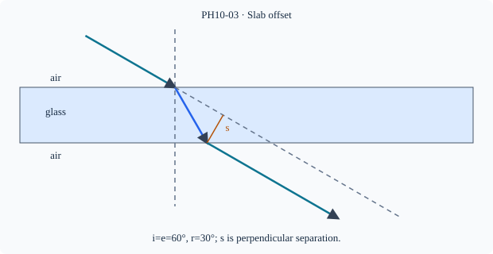

Prerequisite bridge
PH10-02
Before starting, identify the reference frame, directed rays, units and applicable geometric assumptions. Unbound prerequisites remain provisional.
Connected textbook foundation (preserved from PR #5)
3. A parallel glass slab: why do the emergent rays stay parallel?
A ray entering a plane-parallel slab bends toward the normal at the first boundary. At the second boundary the ray bends away. For the same medium outside both faces and parallel surfaces, the final emergent direction is parallel to the incident direction, although the emergent ray can be laterally displaced.
Parallel does not mean coincident. The lateral separation depends on incident angle, slab thickness and refractive index. At normal incidence, the geometric lateral displacement is zero. This result is built from the two local refractions; it is not a universal statement about arbitrary blocks with non-parallel faces.
Model check: Rotate the slab so its faces remain parallel but the incident angle changes. The emergent direction remains parallel to the incident ray in the ideal model, but the lateral displacement generally changes.
Build and check the model
For a plane-parallel slab of thickness t, entry and exit normals are parallel. In the same outside medium on both sides, Snell at both interfaces gives the emergent ray parallel to the incident one. Its perpendicular lateral displacement is s=t sin(i−r)/cos r in the usual air→higher-index slab case. Inside, path length is t/cos r; the offset is geometry, not angular deviation.
Worked anchor
t=6 cm, i=60°, r=30° gives s=6 sin30/cos30≈3.46 cm. Doubling t at fixed angles doubles s; at i=0 displacement is zero.
Condition and limiting check
Parallel emergence requires parallel faces and the same outside refractive index. A wedge or different outside medium changes final direction.
Misconception repair
A laterally displaced ray does not necessarily have an angular deviation.
Reasoning diagram

Self-check before transfer
t=4 cm, i=45°, r=30°. Compute shift and exit angle.
Check the reasoning
s=4 sin15°/cos30°≈1.20 cm; e=45° in same exterior medium.
Source and figure status
Curriculum pointer CBSE10; candidate scope only. Preserved chapter manuscript. Original subtopic-specific figure attached. Scientific figure and teaching-sufficiency reviews remain HOLD.